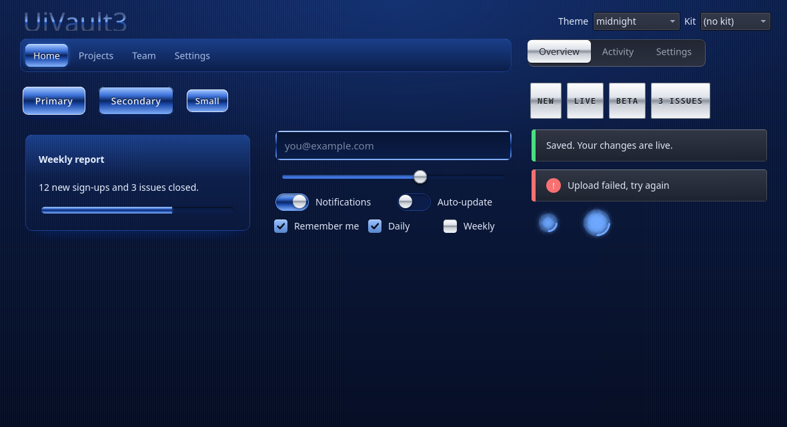
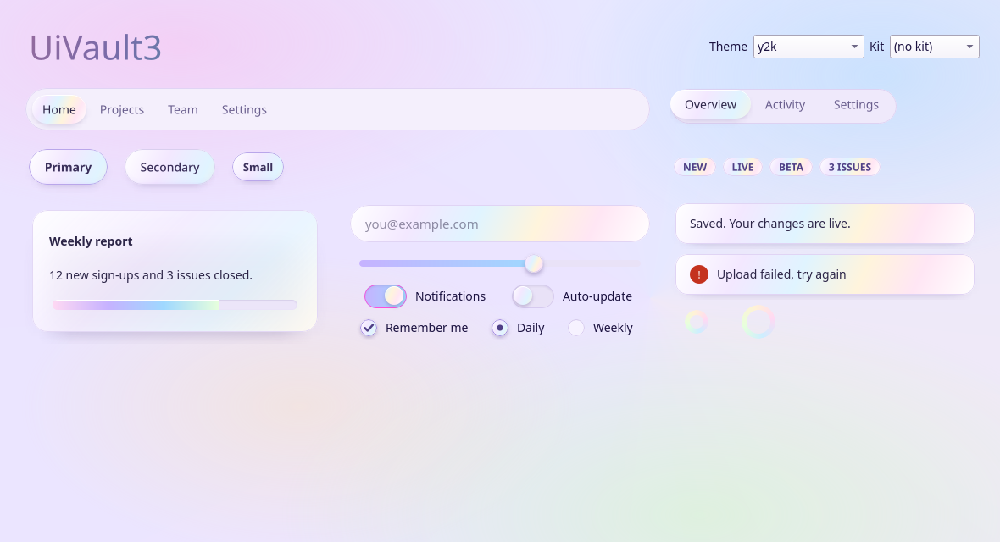
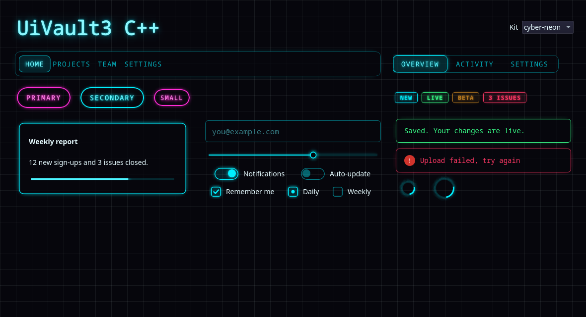

● Python · C++ · Web — one source of truth
Same themes. Any language.
All 87 UI Vault styles aren't only for websites. They ship as a Python package for Qt, Tkinter, Textual, GTK4, Dear PyGui, matplotlib and Rich, and as a single C++ header for Dear ImGui, JUCE, raygui and Qt. All are generated from the same tokens, so your app, your plugin and your site can match.
§ 01 — Install
Pick your runtime.
Click any command to copy it. Each package is standalone, so you don't need the web library.
Python
pip install "git+https://github.com/thenameiscobmarley/ui-vault#subdirectory=python"python -m uivault demo neonC++
curl -O https://thenameiscobmarley.github.io/ui-vault/cpp/uivault.hpp#include "uivault.hpp" // C++17, header-onlyWeb
<link rel="stylesheet" href="https://thenameiscobmarley.github.io/ui-vault/lib/uivault.css"><html data-uv-theme="neon">§ 02 — Python
import uivault
No dependencies. Each toolkit is imported only when you call its function. Pick a toolkit on the left.
§ 03 — C++
#include "uivault.hpp"
One header, C++17, constexpr themes. The adapters switch on when you include the toolkit first. Compile-checked against JUCE 8, Dear ImGui 1.92 and raygui 4.
§ 04 — UiVault3 (native)
Real designs, not approximations.
uivault3 paints every website design with QPainter: the real gradients, glows, bevels, chrome, pearl and holo foils, and animations. It comes for PySide6 and for Qt 6 C++, with the same class names and the same 273 designs, 87 themes, 18 kits and effect layers.



# pip install "git+https://github.com/thenameiscobmarley/ui-vault#subdirectory=uivault3"
from PySide6.QtWidgets import QApplication, QVBoxLayout
import uivault3 as uv
app = QApplication([])
uv.apply(app, kit="deep-metal") # or theme=, parts={"btn": "pearl"}, layers={...}
win = uv.Surface(); lay = QVBoxLayout(win)
lay.addWidget(uv.Heading("Hello", 44))
lay.addWidget(uv.Button("Save", primary=True))
lay.addWidget(uv.Switch("Notifications", True))
uv.load("my-style.json") # a style you built on this site
win.show(); app.exec()
# python -m uivault3 --kit pearl (gallery)
// cpp/uivault3: uivault3.h + uivault3.cpp + uivault3_data.cpp
// (Qt 6 Widgets, CMake AUTOMOC)
#include "uivault3.h"
int main(int argc, char** argv) {
QApplication app(argc, argv);
uv3::apply(&app, uv3::Look{}.kit("deep-metal")
.part("btn", "pearl")
.layer("btn", "glow", "neon"));
auto* win = new uv3::Surface;
auto* lay = new QVBoxLayout(win);
lay->addWidget(new uv3::Button("Save", true));
lay->addWidget(new uv3::Switch("Notifications", true));
win->show();
return app.exec();
}
Widgets: Button, Card, LineEdit, Switch, CheckBox, RadioButton, Slider, TabBar, ProgressBar, Spinner, Badge, Alert, Heading, NavBar, Surface, Dialog. Web-only for now: backdrop blur behind a widget, page canvas/cursor effects and the uv-fx CSS effects. Get the files from the zip or pick widgets in the Library.
§ 05 — Tokens
One palette, three spellings.
Every theme token as it appears in each API. Pick a theme and a language, then click a row to copy it.
| Token | Value | Solid | Use it |
|---|